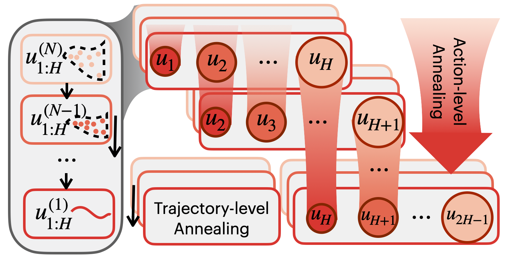
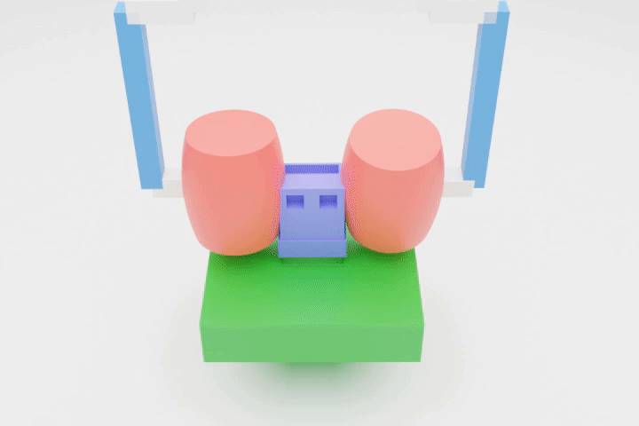
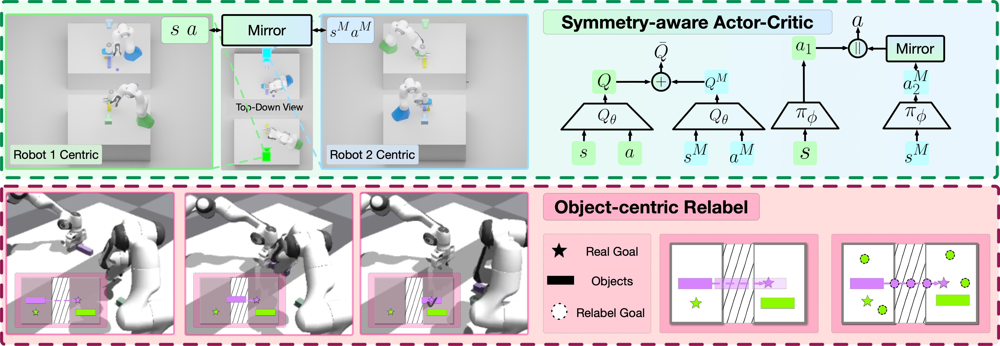
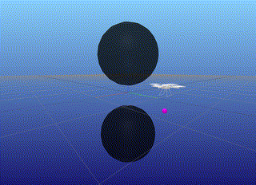
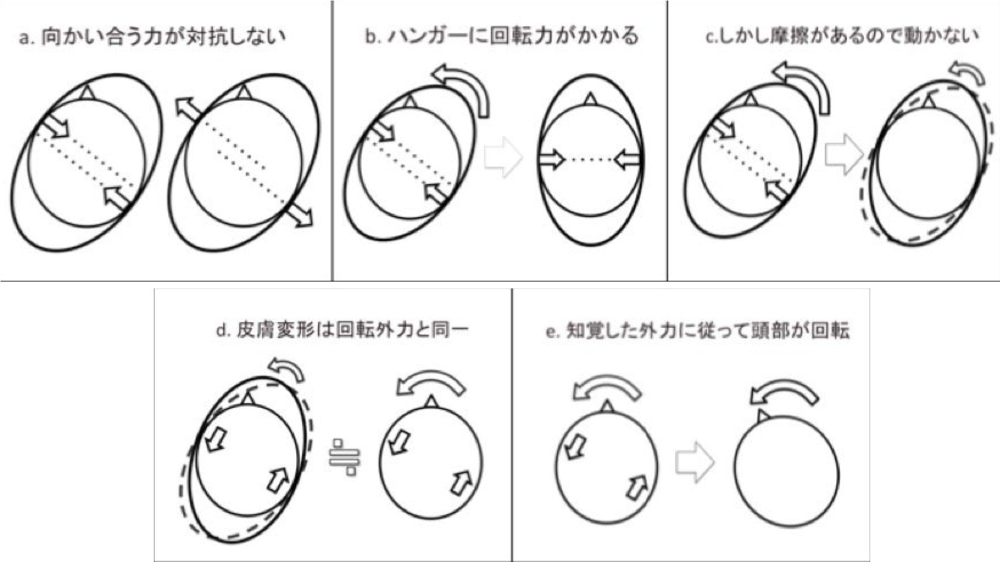

PhD Candidate, Carnegie Mellon University
I am a 3rd-year PhD candidate in Electrical and Computer Engineering affiliated with the Robotics Institute at Carnegie Mellon University, working with Prof. Guanya Shi (LeCAR Lab) and Prof. Guannan Qu.
My research interests lie at the intersection of physics-based robot data generation and the understanding of generative models in control.
* denotes equal contribution.




Trajectory optimization for quadrotor drones carrying slung payloads, enabling aggressive aerial transportation maneuvers through explicit time optimization and collision-aware planning.

A wearable headgear system that guides visually impaired users through head-conditioned reflex signals for intuitive, hands-free obstacle avoidance navigation.
Research Intern · San Francisco, USA
Working on understanding of action representation and large-scale behavior cloning data collection. Supervised by Prof. Guanya Shi and Prof. Rocky Duan.
Research Science Intern · Pittsburgh, USA
Developed universal human-to-robot physics-based retargeting system for converting raw human interaction trajectories to feasible robot trajectories. Supervised by Francois Hogan.
PhD Student · Pittsburgh, USA
Developing generative models for control, bridging learning-based generative models with model-based control for contact-rich real-world tasks. Supervised by Prof. Guanya Shi and Prof. Guannan Qu.
Summer Intern · Stanford, USA
Implemented tactile-based in-hand manipulation system using Bayesian optimization without object shape prior or vision information. Supervised by Prof. Jeannette Bohg.
Research Assistant · Beijing, China
Developed bimanual coordination system for handover and rearrangement tasks using structured reinforcement learning. Supervised by Prof. Yi Wu.
Research Assistant · Beijing, China
Designed decentralized formation control system for mobile robots using multi-agent RL and Hausdorff distance. Supervised by Prof. Yuan Shen.